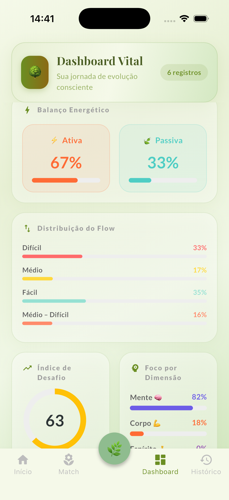
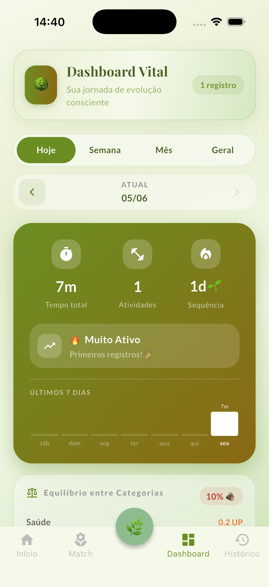

Equilíbrio para quem vive no limite
Suas semanas são 90% Mente e Ativa. Corpo e Espírito ficam no vermelho. O RootFlow mostra o desequilíbrio que leva ao burnout — e o Smart Match te diz exatamente qual prática traz você de volta ao centro.

O custo invisível
Você só percebe o desequilíbrio quando ele já cobrou o preço — no sono, no foco, no corpo. O problema não é falta de disciplina. É falta de visibilidade. Ninguém consegue equilibrar o que não consegue ver.
Como funciona
Um botão sempre à mão abre a ação consciente. Escolha a prática, dê play. Crono, Pomodoro, HIIT ou tempo manual — você decide.
O Dashboard calcula na hora seu UP, a balança Ativa × Passiva e a distribuição entre Mente, Corpo e Espírito. Sem configurar nada.
Ele lê seus últimos 7 dias e sugere exatamente o contrapeso que falta. Muito mental? Ele te empurra para o corpo. Sem culpa, com direção.
A diferença
A maioria para no diagnóstico. O RootFlow vai além: o Smart Match analisa seu padrão e devolve um deck de sugestões rankeadas. Você desliza para escolher — e cai direto no timer. Decisão tomada por você.
Feito para o seu padrão
Ativa × Passiva, lado a lado. O alerta visual de que você só acelera e nunca freia.
Antes de cada prática, você marca o quão presente esteve — de automático a fluindo. Autoconsciência que se constrói sozinha.
Mede se você está se acomodando ou se forçando demais. Performance sustentável precisa dos dois.
"Eu media tudo no trabalho e nada em mim. Em duas semanas o Match me obrigou a parar — e eu voltei a dormir."

E nada disso sai do seu aparelho
Tudo é local. Sem conta, sem servidor, sem rede. O RootFlow funciona offline porque o equilíbrio é seu — e só seu. Exporte quando quiser, apague quando quiser.
Comece hoje
Pagamento único de R$ 28. Sem assinatura, sem conta, sem fricção. Registre sua primeira prática e veja onde sua energia está indo.